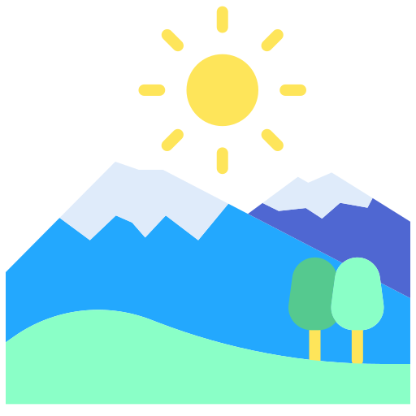
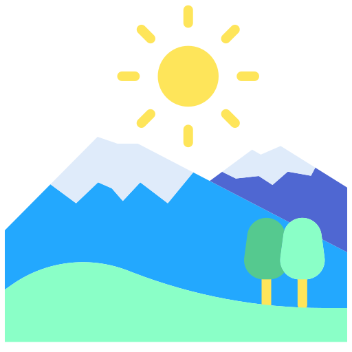

I'm Seringe,
a programmer


I am a web devloper and welcome to my Personal site. I started web development @ JCC and now developing lovely websites and web applications ❤️😁
I was purely in data networking and system security before eventually got into software development. I work as a network engineer from building small & medium enterprise network as well ISP core networks and customer supports for their inter branch communications.
I started web development using raw HTML ,CSS & Javascript which enhance skills on the basic concepts of the web technologies. Now am building websites like this for my personal profile. I will appreciate your feedback on what's looking good and more importantly the needful adjustment to make it great!. Thanks for your time and love to see your comments
I like to play with HTML ,CSS and JavaScript to make amazing and responsive web and mobile apps. in it ...
CONTACT ME